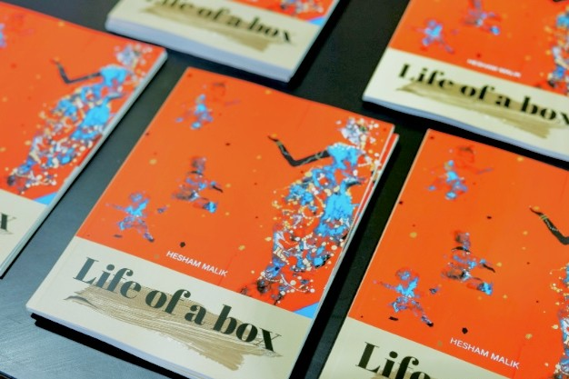

LIFE OF A BOX

Platforma Life of a Box slouží jako prostředek pro předávání poselství, demonstrování principů a inspiraci k transformaci. Zapojením se do této iniciativy zvyšujeme povědomí a poskytujeme vzdělání o environmentálních problémech.
Recyklované materiály nabízejí bohatou inspiraci a kreativitu pro umělecké projekty, zejména pro ty, kteří chtějí propagovat ekologické uvědomění a udržitelnost. Začlenění recyklovaných materiálů do uměleckých projektů poskytuje vynikající příležitost integrovat environmentální vzdělávání do vaší výuky nebo praxe. Environmentální vzdělávání zahrnuje pochopení přírodního prostředí a lidských interakcí s ním, s cílem podporovat povědomí, znalosti, dovednosti, postoje a chování, které podporují ochranu životního prostředí a udržitelnost. Použitím recyklovaných materiálů v uměleckých projektech se můžeme vzdělávat a vzdělávat ostatní o řadě environmentálních témat a problémů, včetně nakládání s odpady, ochrany zdrojů, změny klimatu, biodiverzity a environmentální spravedlnosti. Nejdůležitější je, že zvyšujeme povědomí, které nás může inspirovat k tomu, abychom podnikli kroky a provedli pozitivní změny v našem osobním, sociálním a profesním životě, což prospěje jak planetě, tak společnosti jako celku.
Life of a Box je globální iniciativa, kterou založil umělec Hesham Malik, a která vzdává hold organizacím a jednotlivcům s hlubokým zájmem o environmentální výzvy, jimž čelí náš svět. Tato iniciativa využívá recyklované materiály pro umělecké projekty a nabízí řadu výhod, včetně možnosti minimalizovat odpad a chránit cenné zdroje. Přetvářením předmětů, které by jinak skončily na skládkách nebo ve spalovnách, lze aktivně přispívat k ochraně přírodních zdrojů, snižování emisí skleníkových plynů a prevenci znečištění.
Různá města a organizace po celém světě podporují Heshamův projekt darováním použité krabice. Hesham přeměňuje tyto krabice na umění a vystavuje je v muzeích po celém světě s cílem propagovat environmentální uvědomění a udržitelnost. První výstava Life of a Box se koná v Muzeu papírenství v Duszniki-Zdrój v Polsku.
Life of a Box však čelí určitým překážkám a omezením. Mezi tyto výzvy patří hledání vhodných materiálů, které odpovídají našim cílům a požadavkům; značný čas a úsilí investované do identifikace organizací nebo jednotlivců, navazování kontaktů, shromažďování, organizace, vytváření a uchovávání uměleckých děl; a nakonec je vždy potřeba mít záložní plán pro jakýkoli nepředvídaný výsledek nebo neúspěch. Uprostřed těchto výzev slouží Life of a Box jako platforma pro předávání poselství, ukazování hodnot a motivaci ke změně. Zapojením se do této iniciativy zvyšujeme povědomí a poskytujeme vzdělání o environmentálních problémech a možných řešení.
Ohlasy světových muzeí a institucí
„Muzeum Nobelovy ceny věří, že budoucnost je stále otevřená a můžeme ji utvářet prostřednictvím kritického myšlení, kreativity a vytrvalosti. Cílem našich snah v oblasti klimatu a životního prostředí je omezit náš negativní dopad a přispět k trvalému a udržitelnému rozvoji našich společností. Jsme hrdí, že podporujeme iniciativu Heshama Malika 'Life of a Box'.“
Muzeum Nobelovy ceny
Stockholm, Švédsko
„Papír spojuje – jako nositel myšlenek, obrazů a příběhů. Tento materiál hraje klíčovou roli v naší sbírce grafického umění s přibližně 100 000 díly na papíře. O to významnější je spolupráce s Muzeem papíru v rámci projektu 'Life of a Box'. Udržitelnost pro nás znamená vytváření nových spojení: mezi institucemi, zeměmi a lidmi. Toto malé gesto – předání krabice – představuje velké společné cíle.“Městská muzea v Norimberku Německo
„Jako světový lídr usilujeme o plný přínos k ochraně a obnově zdraví planety s cílem chránit a posilovat lidské zdraví. Zvýšení environmentální udržitelnosti našich provozů zvyšuje naši odolnost a jsme potěšeni, že jsme se zapojili do udržitelné iniciativy Heshama Malika 'Life of a Box'.“Muzeum papíru a vodoznaků (UNESCO Creative City) Fabriano, Itálie
„Národní muzeum Cotroceni v Rumunsku není jen historickou a kulturní památkou. Prostřednictvím svých výstav a iniciativ i oddanosti udržitelnosti pokračuje v roli kulturní instituce, která nejen uchovává historii, ale také utváří odpovědnější budoucnost. Podporujeme různé iniciativy udržitelnosti, jako je Heshamův 'Life of a Box', které jsou zásadní pro zachování naší planety pro budoucí generace.“Národní muzeum Cotroceni Rumunsko
„Náš přístup k udržitelnosti je zakořeněn v principech Kaitiakitaka, Tohukataka a Whanaukataka. Naším posláním je zachovávat a učit se z pokladů minulosti i současnosti pro budoucnost. Působíme jako strážci dědictví a životního prostředí a využíváme naše místo v Aotearoa k edukaci a inspiraci ostatních. Náš přístup k udržitelnosti a vzdělávání staví na výzkumu a vědeckých poznatcích. Jsme hrdí na naši účast v iniciativě 'Life of a Box'.“Muzeum Tūhura Otago Nový Zéland
„Hawk Conservancy Trust je charitativní organizace pro ochranu přírody a oceňované návštěvnické centrum v Hampshire ve Velké Británii s posláním chránit dravé ptáky a jejich přirozená prostředí. Dravci jsou klíčovým indikátorem zdraví životního prostředí. Pochopení toho, jak je nejlépe chránit, a partnerství s iniciativami udržitelnosti, jako je Heshamův 'Life of a Box', má zásadní význam pro zachování naší planety pro budoucí generace.“The Hawk Conservancy Trust Spojené království
„V ArtLords věříme, že každý zachráněný předmět v sobě nese příběh odolnosti a obnovy. Záchranou a novým využitím této krabice ctíme konečné zdroje naší planety a ukazujeme sílu umění inspirovat k udržitelné změně. Podporujeme iniciativu Heshama Malika 'Life of a Box', která přetváří jednoduché materiály v symboly naděje, kreativity a kolektivní odpovědnosti za zdravější svět.“ArtLords „Gender Apartheid“ v Afghánistánu
Zapojené instituce a partneři po celém světě
Národní muzeum Dánska, Evropské muzeum Schengenu, Muzeum Nobelovy ceny, Maltské národní muzeum umění, Národní muzeum dějin Ukrajiny, Národní muzeum Irska, Nuukské muzeum – Grónsko, Švýcarské muzeum – Švýcarsko, Národní muzeum Cotroceni – Rumunsko, Městské muzeum Reykjavíku – Island, Musée des Augustins – Toulouse (Francie), Muzeum papírového umění – Dánsko, Muzeum města Norimberk – Německo, Hawk Conservancy Trust – Hampshire (UK), Environmental Services Association – Buckingham (UK), Newyorská veřejná knihovna – USA, Německá národní knihovna – Frankfurt, Museum Brugge – Belgie, Muzeum Waitangi – Nový Zéland, Přírodovědné muzeum Univerzity v Curychu, Muzeum kultur v Basileji – Švýcarsko, Mohatta Palace Museum – Karáčí (Pákistán), Museum Kampa – Praha, Museum of Anthropology – Britská Kolumbie (Kanada), Město Senica – Slovensko, Ålandské ostrovy – Finsko, Lidé Ukrajiny, Elmira College – New York, University of Providence – USA, Fundación MAPFRE – Španělsko, Galerie Chimera – Irsko, Newyorská univerzita, Galerie hlavního města Prahy (GHMP), Masarykova univerzita, Česká zemědělská univerzita, Červený kříž, UNICEF, Belgická ambasáda, Národní galerie Praha, Haus des Papiers gGmbH – Berlín, Georgia Institute of Technology – Atlanta (USA), České vysoké učení technické (ČVUT) – Praha, TŪHURA Otago Museum – Nový Zéland, University of Waterloo – Kanada, Muzeum Kroměřížska – Kroměříž, AgoraPrep School – Toronto (Kanada), Carpe Diem Gallery – Goa (Indie), Art Wall Gallery – Praha, Dům zahraniční spolupráci – Praha a mnoho dalších.